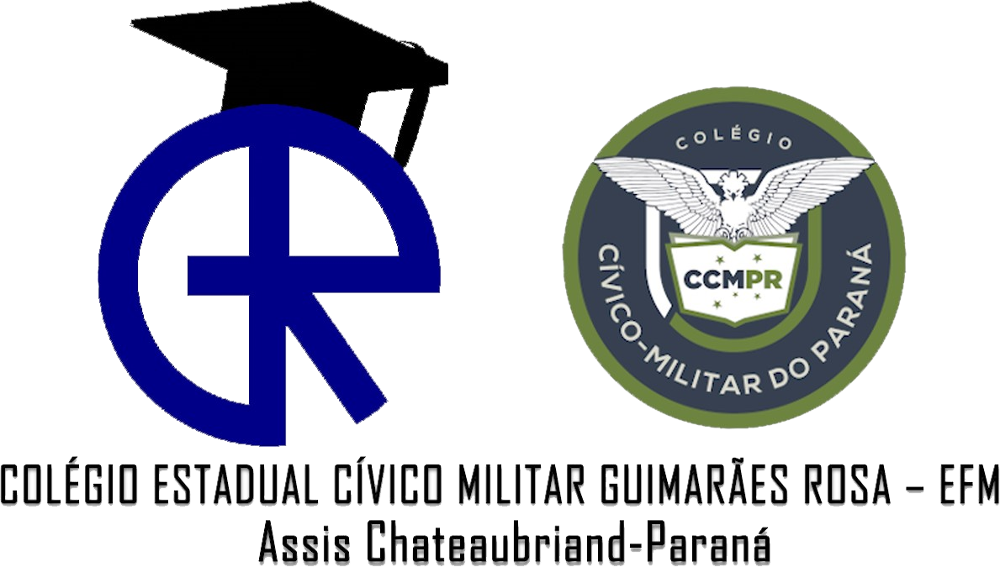
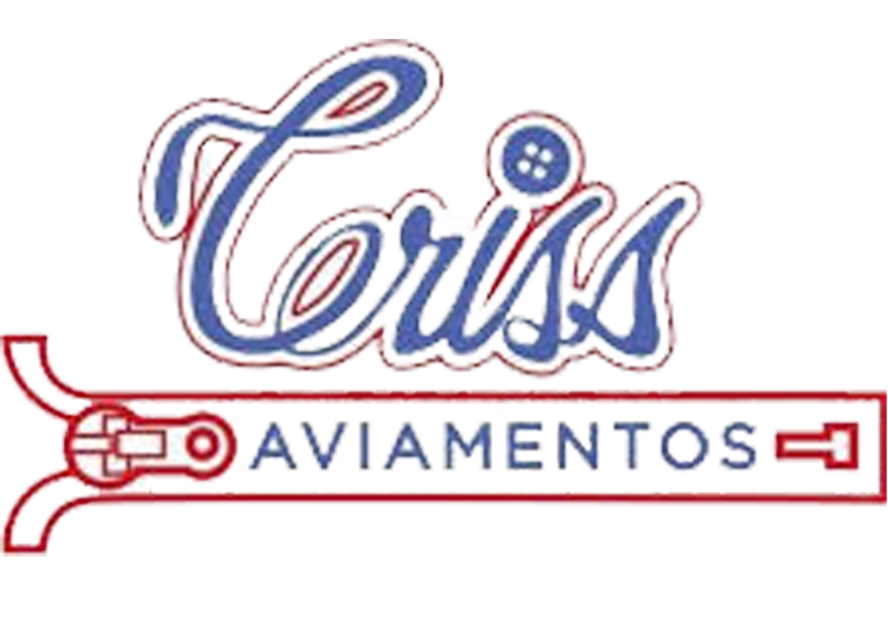

Apoiadores


Fase 4 (Resultados)
Projeto Agro Detector
Coleta e Mapeamento de Resíduos Tóxicos e Microplásticos
Projeto
Frascos
Noticias
Componentes
Ideia
Materiais
Experiência
Agradecimentos
Fotos
Professor
Alunos
47
Frascos
tóxicos coletados
üìÑ Relat√≥rio PDF
67
Lixo Doméstico
a Coletar
Doméstico
Tóxico
Hídrico
Gerando relatório, por favor aguarde...
üîç Coletando dados...
üßπ Limpando informa√ß√µes...
üì° Buscando imagens...
ü߆ Convertendo imagens em base64...
üé® Redimensionando imagens...
üñ®Ô∏è Inserindo no PDF...
üìÑ Finalizando relat√≥rio...